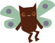
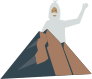

Tracks
Accessibility and Inclusivity
Description
As technology becomes more and more intertwined with daily life, we must ensure that technology is accessible and inclusive for everyone regardless of race, gender, age, or ability. Hackers who choose this track will aim to make tech more accessible and equitable.
Guiding Questions
- How can technology make our world more accessible to people of all backgrounds and abilities?
- How can we open up exclusive systems and institutions?
- How can we modify existing technology to accommodate people with a wide range of abilities?
Potential Topics
- Accessible Games: Can we make games for players with motor or visual impairments? Can we ensure these games are enjoyable for all players?
- Enhance Web Accessibility: Is there a way to make existing websites more accessible through browser extensions?
- Breaking Barriers: What barriers exist today that hinder equity and inclusivity? How can we break or bypass these barriers with technology?
Resources
- GMTK's Designing for Disability: A YouTube video series on designing video games to be more accessible
- Axe // WAVE: Browser extension accessibility checkers for accessible web dev
- NoCoffee (Chrome/Firefox): Browser extension for simulating visual impairments on websites
Education
Description
We invite hackers to rise to the challenge of virtual education with innovative solutions to the challenges of remote learning. Hackers who choose this track will work to increase educational opportunities for students of all abilities and backgrounds.
Guiding Questions
- How might we use EdTech to enhance learning in a traditional classroom setting?
- How can technology improve students’ retention of information?
- Can education technology be used to make homework more useful and improve students’ experiences with their at-home assignments?
- How can education technology make learning more engaging for students of all ages?
- How can technology be used to introduce young students to STEM fields?
Potential Topics
- Writing, Grammar, and Literature: How can technology be used to improve students’ reading and writing skills?
- Languages: What can be built to help people of all ages pick up a new language?
- Early STEM Education: Introducing young students to STEM fields like computer science, math, and biology is critical to developing a lifelong love of learning. How can EdTech best be used to facilitate that passion?
- Pre-K Education: How can education technology be used to positively shape children’s formative years?
- Organization and Stress Management: With tasks on to-do lists piling up for students and professionals alike, how can EdTech help people stay on top of their workload and prevent them from becoming anxious or overwhelmed?
- Cutting-edge Technologies: Can you incorporate advances in fields like machine learning and augmented reality to improve learning experiences? How can these fields be introduced and taught to students of all ages?
Resources
- Google Classroom API: Tools for teachers to facilitate digital learning
- Conjuguemos: Interactive tool to learn verb conjugations in a variety of languages
- Khan Academy: Videos and lessons on a variety of topics, including math, science, and grammar
- Duolingo: Online resource for learning new languages
- Typeracer: Fun game to improve typing speed and accuracy
- Coursera: Online courses on a myriad of topics
- Quizlet: Interactive flashcards
- EdX: Online courses, including lessons from colleges and universities
- Scratch: Block-based coding for computer science education
Healthcare
Description
The current COVID-19 pandemic has highlighted pre-existing healthcare inequities, both globally and at home. Hackers who choose this track will leverage modern technology to improve healthcare access and treatment.
Guiding Questions
- How might we make health services more accessible and more affordable?
- How might we encourage people to maintain healthy sleeping, activity, eating, etc habits?
- How might we stay aware of the ongoing health situation in our local communities and states?
- How might we make diagnosing illnesses more accurate and easier?
Potential Topics
- Assistive Tech: Although technology has greatly improved to aid individuals with disabilities, the world is still inaccessible to them. How can we engineer various solutions to make the world more disability accessible?
- Addictions: How can we help individuals recovering from addictions stay clean at home and without breaking the bank?
- Mental Health: Is there a way we can spread more mental health awareness as well as information, treatments, and solutions?
- Remote Healthcare: How do we make obtaining subscriptions and receiving non-surgical care easier for individuals in the face of a pandemic?
- Staying Fit with Social Distancing: How can we stay fit and be motivated to stay fit during situations like COVID-19? How can we workout with friends while practicing social distancing?
- Patient Tracking: Hospitals have a hard time keeping tracks of patients’ records outside of their walls. How can we implement a way to track patients and reduce this problem?
Resources
- Google Cloud: Access to COVID-19 Public Datasets
- City Bikes API: Bike sharing data
- CDC WONDER: Wide-ranging Online Data for Epidemiological Research
- World Health Organization (WHO): Health-related datasets on member countries
- Healthcare.ai: Machine learning in healthcare data
- HCUP: Datasets from US hospitals
- FitBit: APIs and details on how to develop an app to pair with FitBit devices
- OpenNEURO: Open platform for medical imaging data
- HealthData.gov: Public health data in the United States
- SEER: National Cancer Institute Surveillance, Epidemiology, and End Results
- R3 Data: Registry of Research Data Repositories
Sustainability

Description
As other crises surge, the threat of climate change looms in the background. Hackers who choose this track will work on environmental solutions for local and global communities.
Guiding Questions
- How can we help people and organizations realize their environmental impact and motivate them to make positive change?
- How can technology be used to better prepare communities for the effects of climate change?
- How can we protect wildlife and ensure that the Earth remains a fitting home for all species?
Potential Topics
- Carbon Offsets: Can we help calculate carbon offsets for groups and organizations and show their impact?
- Climate Change Lobbying: Is there a place for technology in helping groups organize and advocate for policy changes to fight climate change?
- Native Plant Restoration: Can we teach people how to restore native flora in their area?
- Wildfire Prevention and Response: Can we help communities understand and prevent wildfires? Can we help them respond in case one happens?
Resources
- Cloverly: An API to calculate carbon emissions and calculate/purchase carbon offsets
- Fishwatch: An API provided by NOAA Fisheries for information on seafood sustainability
- AirVisual: An API that provides air quality and weather information
- AMEE: An API that provides data (financial risk, carbon emissions, carbon efficiency ratings, environmental ratings, etc.) on 20 million companies. It also includes information about energy consumption and carbon emissions for industrial activities.
Non-Profit Challenge

Description
One of the primary goals of HackNC is teaching hackers to apply their skills in real-world situations. This year, we're inviting student organizations, nonprofits, and open-source software groups to pitch projects with tangible impact. Hackers who choose this challenge will be able to tackle these projects and may even continue working with the client afterwards.
General

Description
Not all problems and innovations can fit neatly into specific boxes, so hackers who choose this track will be able to submit other unique hacks.
Special thanks to HackMIT for their work in compiling many of the above resources!